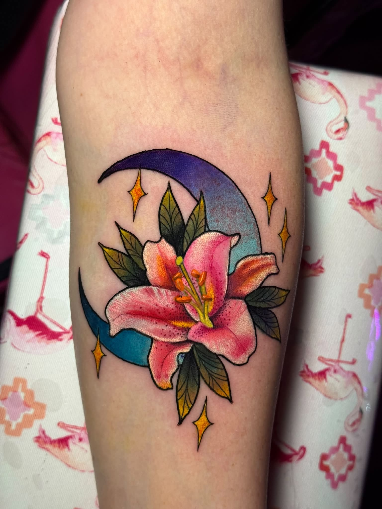
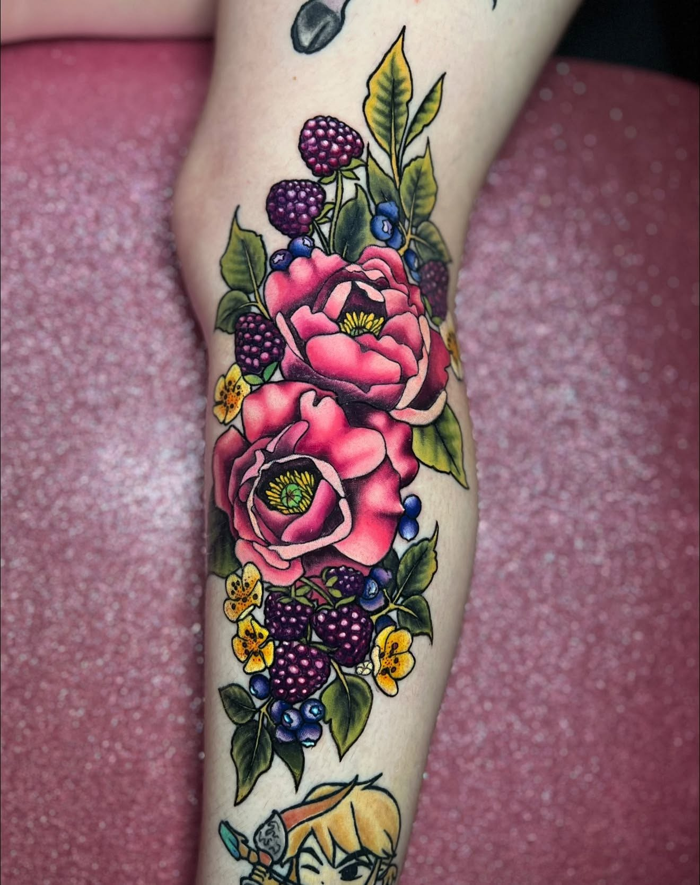
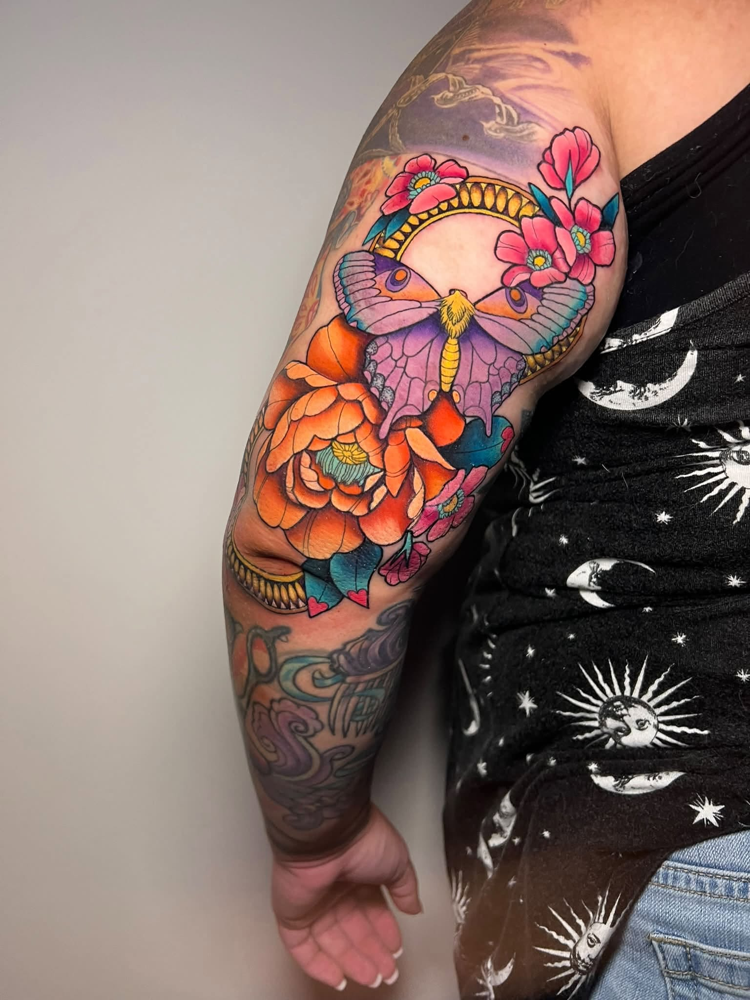
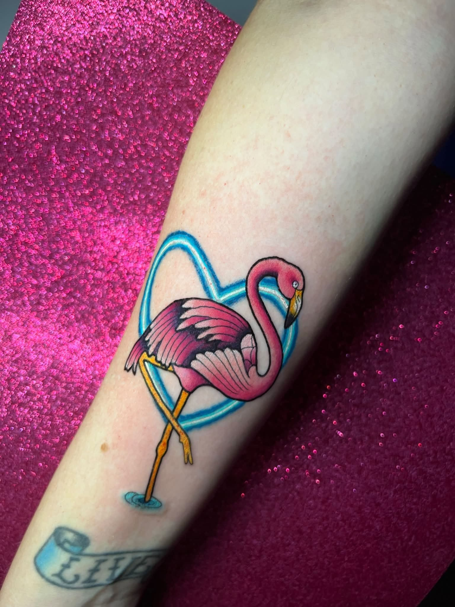

The collection
Color is
the mood.
A bright, ornate collection of colorful pieces for anyone who wants their tattoo to feel expressive, playful, and full of personality.
Book ↗The Plastic FlamingoFlowers · hearts · bold lines · happy color





A selection of colorful tattoo work from the collection.